Olá, fazendeiro! 🌱 Seja muito bem-vindo ao Stardew Blog!
Este espaço foi criado para ser o seu ponto de apoio dentro do jogo, reunindo as melhores dicas para você
evoluir no cultivo, na mineração, na pesca e na criação de animais.
Aqui você também encontra uma calculadora de recursos, que ajuda a planejar a fabricação de itens essenciais,
aumentando sua produtividade e maximizando seus lucros.
Além disso, disponibilizamos gráficos de desempenho, que mostram o seu retorno com base no foco que você
escolher dentro do jogo — assim, fica muito mais fácil tomar decisões estratégicas.
E não para por aí! Temos também um fórum, onde você pode compartilhar suas experiências, tirar dúvidas e trocar
ideias com outros jogadores da comunidade 💛
Personagens de extrema importância no começo do jogo:
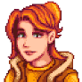
A Robin será de extrema importância para te ajudar no começo do jogo. Por um preço justo e a matéria prima
necessária, ela te ajudará levantando construções essenciais para seu desenvolvimento no jogo: seu celeiros,
moinhos e silos serão construídos por ela.
Horário de funcionamento:
Segunda a sexta: 9h às 17h
Sábado: 9h às 17h
Domingo: ❌ Fechado
O Pierre é dono e administrador do Armazém do Pierre e vai te fornecer as sementes e fertilizantes da
melhor
qualidade, o que vai te ajudar muito nesse primeiro momento.
Horário de funcionamento da loja:
Segunda a sexta: 9h às 17h
Sábado: 9h às 17h
Quarta-feira: ❌ Fechado
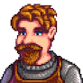
O Clint mora do outro lado do rio, e ele é o ferreiro local. Recomendo que sempre procure a loja dele antes
de
começar a se aventurar nas cavernas do jogo. Uma boa picareta e espada te ajudarão muito nessas explorações.
Horário de funcionamento da loja:
Segunda a sexta: 9h às 16h
Sábado: 9h às 16h
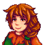
A Marnie reside no Rancho da Marnie e comercializa rações, animais e feno. Observação: Quase sempre, quando
você precisar da Marnie, ele não estará na loja, então eu compraria um catálogo assim que fosse possível,
para evitar que os animais morram de fome.
Horário de funcionamento da loja:
9h às 16h, mas fecha segunda e terça 😅
Dicas importantes para iniciantes no jogo:
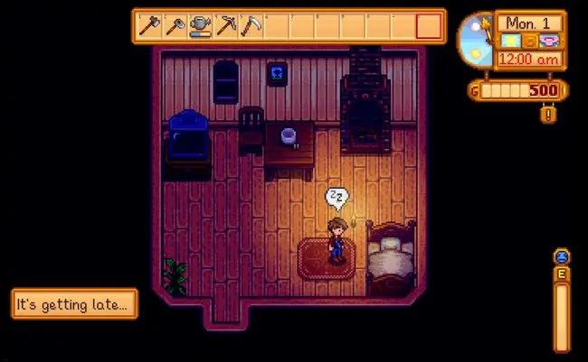
Não gaste energia desnecessariamente limpando toda a fazenda logo no início. Ao assumir a fazenda de seu
falecido avô, as coisas estarão em condições bem precárias, então o melhor a se fazer é arregaçar as mangas
e
começar a limpar sua terra. Mas apesar disso é importante lembrar que no começo do jogo você não tem
necessidade de gastar muita energia de forma desnecessária, então vá com calma e evite desmaiar, pois cada
vez
que isso acontece os moradores te cobrarão uma pequena fortuna da conta do hospital
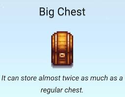
Construa baús: No começo de sua jornada, sua mochila mais vai estar para uma pochete de tão pequena. E
enquanto não tiver as moedas necessárias para comprar a melhoria na loja do Pierre, criar baús para
armazenar
os materias que for coletando irá te auxiliar.
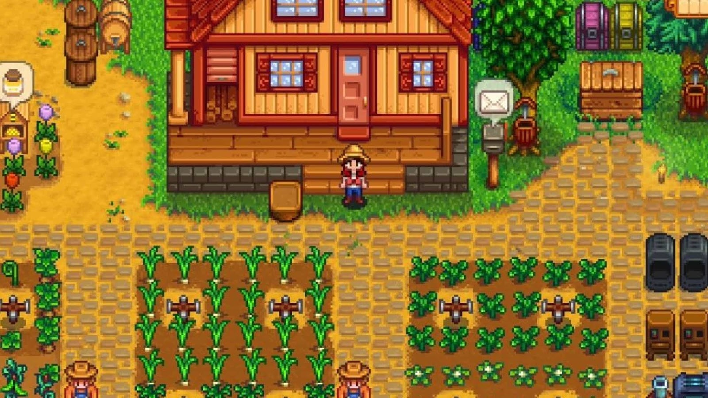
Com tantas possibilidades do que fazer em Stardew Valley, é possível se sentir um pouco perdido sobre o que
priorizar no início. Porém, a melhor coisa é se concentrar na sua plantação no começo, aproveitando o resto
do
tempo para minerar e coletar outros recursos espalhados para o mapa, o que ajudará a juntar dinheiro para
novas ferramentas e melhorias para sua casa ao longo do gameplay.
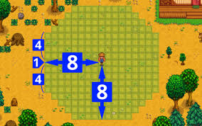
E falando em perder dinheiro, assim que você começar a plantar, os corvos da região vão decidir que sua
fazenda é um ótimo lugar para conseguir um lanchinho gratuito, atacando periodicamente suas colheitas.Uma
forma simples de evitar esse problema são os espantalhos, que podem ser criados desde o início, com cada um
protegendo uma região circular de 8x8.
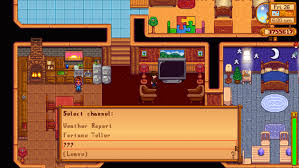
Depois de muito trabalho e exploração, chegou a hora de se recolher para descansar. Porém, sua jornada
ainda
não acabou! Ao voltar para a cabana, é hora de assistir TV antes de dormir, porque os canais de Stardew
Valley
oferecem informações valiosas para sua aventura.
Guia de Canais:
Rainha do molho: Ensina receitas de comida e passa aos domingos com
reprises na quarta
Cartomante: Mostra sua sorte do dia, muito importante para saber se
você terá sorte na mineração, pesca ou encontrando itens raros
Previsão do tempo: Diz o clima do dia seguinte, muito útil para
planejar o dia seguinte no jogo
Vida no campo: Dá dicas importantes sobre agricultura, pesca,
eventos e mecânicas escondidas no jogo
Dicas de cultivo:
Stardew Valley tem as quatro estações que conhecemos e cada uma dura um período fixo de 28 dias. A mais
desafiadora do jogo será o inverno, obviamente.
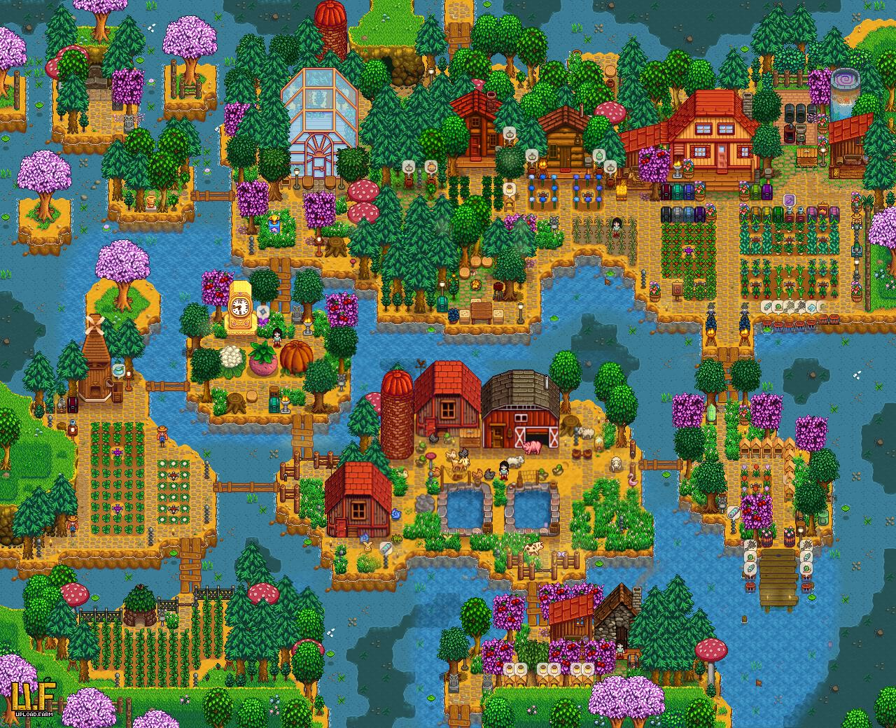
1ª estação: Primavera 🌸
A primavera é de longe a estação mais bonita e aguardada do jogo, o cenário se enche de flores, o clima
fica
agradável e é a estação ideal para aprender a cultivar, já que os cultivos dessa estação são mais simples:
Nessa estação, as seguintes plantas podem ser cultivadas: Jasmin-azul, couve-flor, alho, couve, chirívia,
batata, ruibarbo, tulipa, arroz não moído, cenoura. Além dessas, o grão de café, vagem e morango também
podem
ser cultivados, esses rendendo colheitas múltiplas.
A melhor planta para se ganhar dinheiro nessa primeira primavera é a batata, você pode comprar as sementes
do
Pierre.
Quais os melhores cultivos da primavera?
2ª estação: Verão ☀️
O verão faz as plantas crescerem rápido e possui menos chuva que a primavera
Nessa estação você consegue cultivar: Melão, papoula, rabanete, repolho roxo, carambola, flor-miçanga,
trigo e
girassol como colheita única. Como colheitas múltiplas temos o mirtilo, milho, lúpulo, pimenta quente,
tomate e
grão de café
A melhor planta para essa estação é o mirtilo, pois produz várias vezes, dando muitos frutos por colheita e
rende 80 ouros por fruto
Quais os melhores cultivos do verão?
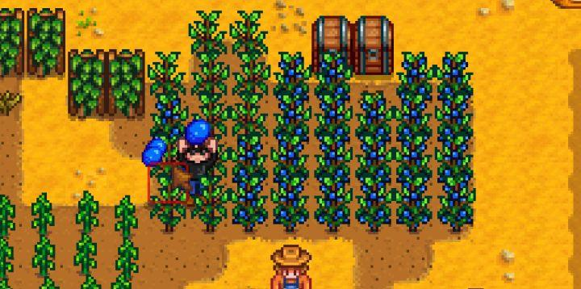
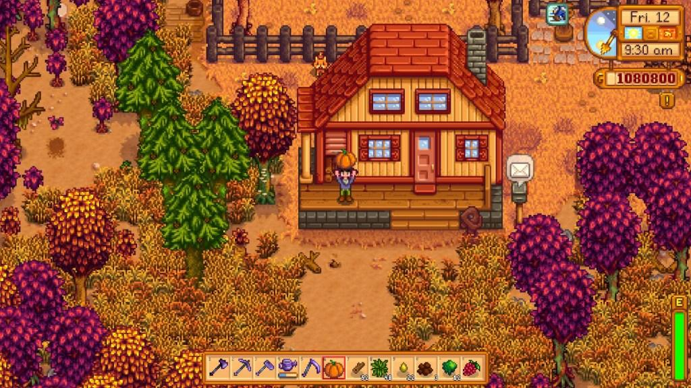
3ª estação: Outono 🍂
No outono, a estética do jogo fica extraordinária de tão linda, além disso é uma das estações mais
lucrativas
do jogo. O outono tem ainda menos chuvas que o verão, então é importante ter um bom regador nessa altura do
jogo.
Nessa estação você pode plantar como colheita única: Amaranto, alcachofra, beterraba, couve chinesa,
rosa-de-fada, abóbora, girassol, cereja de joia doce, trigo, inhame. Como múltiplas colheitas: Milho,
Oxicoco,
Berinjela, uva, e brócolis.
Melhores plantações do outono sem dúvida:
4ª estação: Inverno ❄️
Muita atenção
É aqui que o bicho pega!! No inverno, não é possível plantar em área externa devido à baixa temperatura.
Então
é de extrema importância que a essa altura do jogo você já tenha desbloqueado a estufa, que vai te salvar
durante os 28 dias dessa estação!
Caso você ainda não tenha desbloqueado a estufa, não se preocupe, você ainda poderá contar com a pescaria
para
se sustentar durante esse período. Durante esse período a única possível plantação externa é do melão
poeiro.
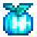
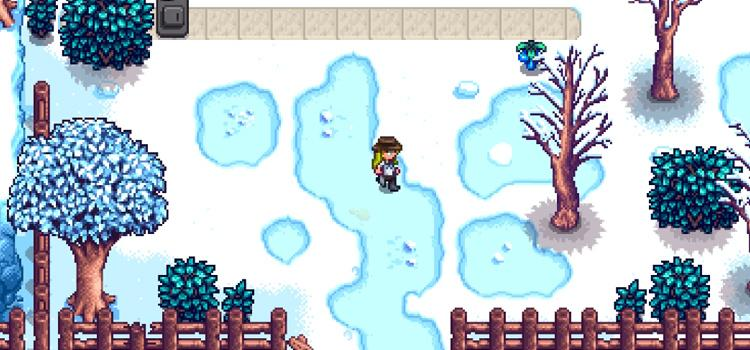
A Pesca em Stardew Valley
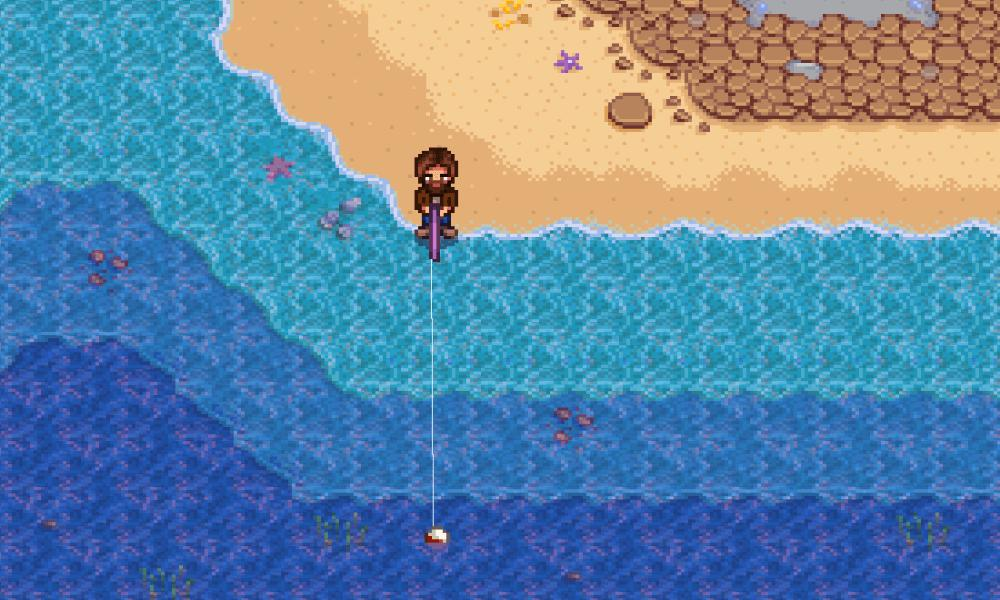
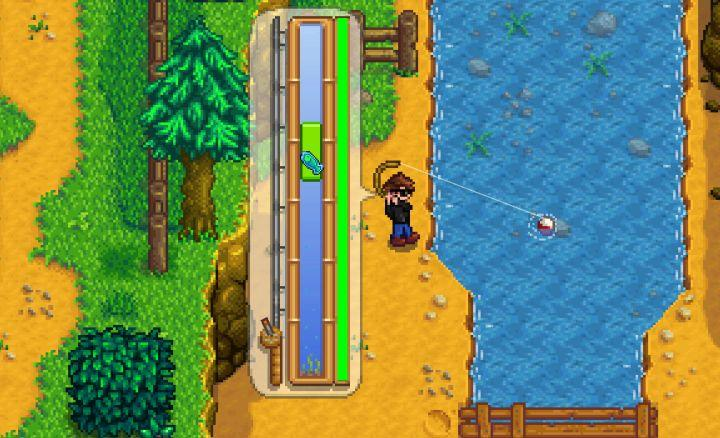
A pesca é uma das melhores maneiras de ganhar dinheiro e também uma das partes mais divertidas do jogo!
No começo do jogo pode ser um pouco complicado se acostumar com o controle da barra de pesca, mas logo você se acostuma a isso e estará se divertindo pescando vários peixes pela Vila dos Pelicanos.
Uma coisa importante de se saber nesse início de jogo é que a variedade de sua pesca depende da estação, clima, horário e experiência em pesca. Aqui abaixo vai um guia de todos os possíveis lugares de pesca e os peixes que é possível conseguir em cada um.
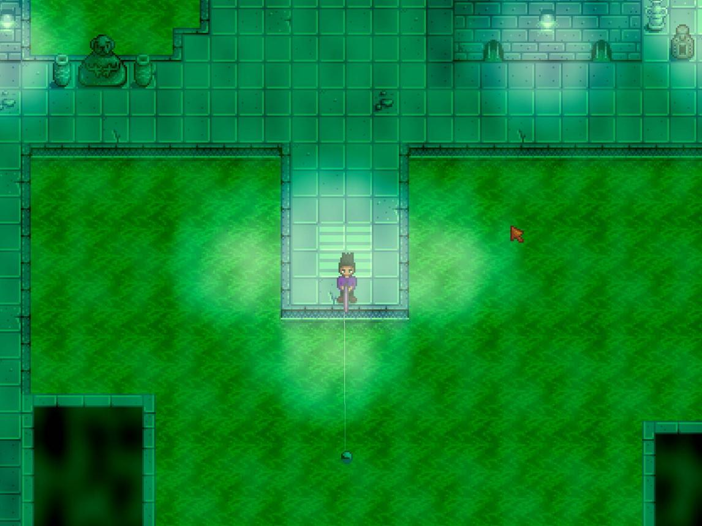
Esgotos
Os Esgotos são um local de pesca fácil e produtivo, especialmente para aprimorar a habilidade de pesca ou
adquirir tesouros. A Carpa é o peixe menos difícil de pescar no jogo e é o único peixe nos esgotos (exceto
um
único peixe lendário, a Carpa mutante). Portanto, todo arremesso de linha resulta em uma recompensa de item
imediata ou em uma pesca rápida de carpa.
Peixes mais comuns de se pescar no esgoto:
Carpa
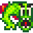
Carpa Radioativa
Praia
A praia é o melhor para você começar a ganhar dinheiro de verdade com pesca.
Quanto mais longe sua vara alcançar, melhores serão os peixes e a parte da noite (após as 18h) costuma ser mais lucrativa.
Fique no píer e lance o mais longe que puder.
Os peixes mais comuns de se pescar na praia:
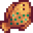
Linguado
Sardinha
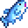
Atum
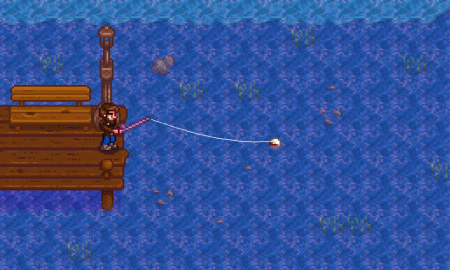
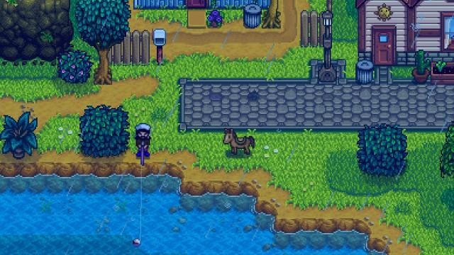
Rio(Vila dos Pelicanos)
A pesca costuma ser mais variada e menos previsível.
Nos dias de chuva você consegue pescar o bagre, o mais valioso dentre os comuns de se pescar por aqui.
Os lugares mais largos do rio costumam ter os melhores peixes e alguns deles só aparecem em horários específicos.
Os peixes mais comuns de se pescar nesse rio:
Brema
Bagre (quando chove)
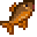
Sunfish
Lago da montanha
Os peixes aqui são mais calmos e por isso são mais fáceis de pescar, sendo um bom lugar para treinar até se acostumar com a barra de pesca e comandos.
No verão e inverno é possível pescar o Esturjão, que é o mais valioso dentre os comuns de se pescar. Um ótimo lugar para ganhar experiência em pesca.
Os peixes mais comuns de se pescar nesse lago:
Carpa
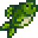
Achigã
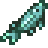
Esturjão
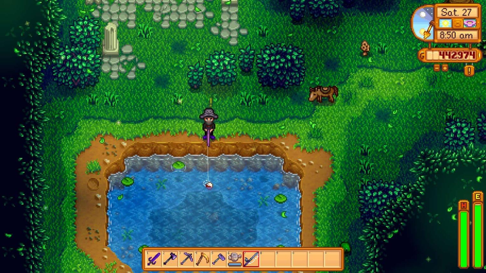
Lago da fazenda
Pescar no lago da fazenda serve mais para treino do que para lucro, isso devido a enorme quantidade de lixo que se pega pescando aqui e a pouquíssima quantidade de peixes bons.
Os peixes mais comuns de se pescar:
Carpa
Lixo😅
Minas
Quando conseguir pescar nas minas, você já estará em nível mais avançado e com mais experiência em pesca, isso porque a pesca só é desbloqueada nos últimos andares das minas.
A barrinha é mais difícil de controlar, os peixes são mais rápidos e você conseguirá peixes raros com mais facilidade.
Os peixes mais comuns de se pescar:
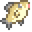
Peixe fantasma
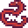
Enguia de lava
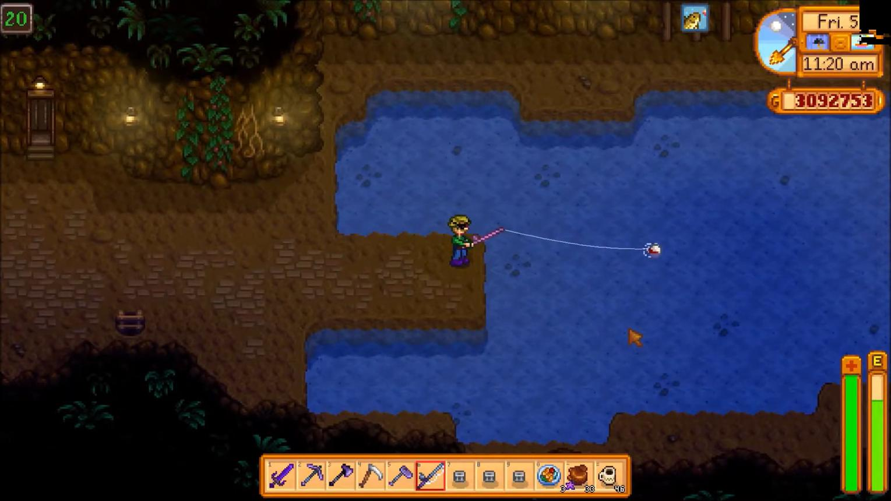
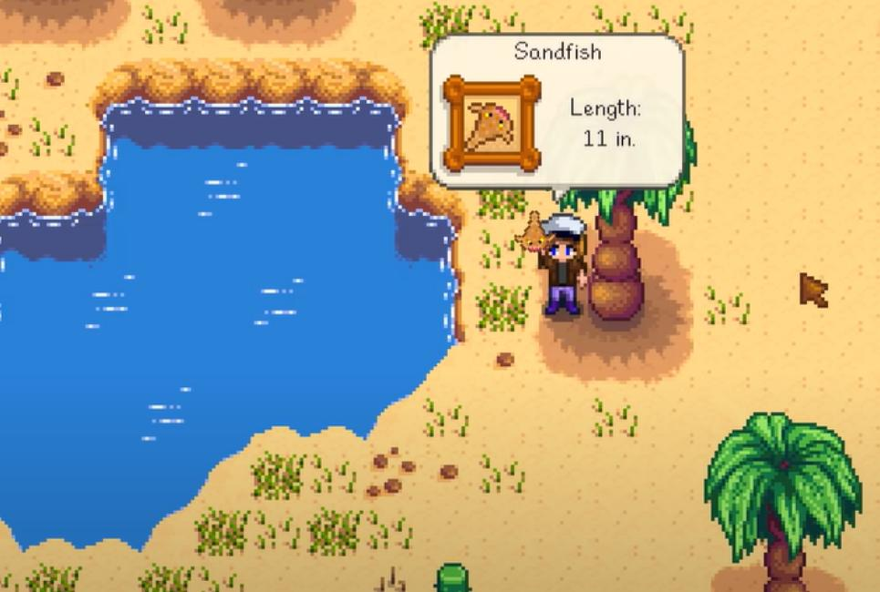
Deserto
No deserto há poucos tipos de peixes e você consegue pescar em horários específicos. Você consegue o areinha que é importante para completar o Centro Comunitário.
Os peixes mais comuns de se pescar:
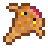
Areinha
Pecuária em Stardew Valley
A pecuária é uma das melhores formas de conseguir dinheiro no jogo. Para começar você vai precisar construir um galinheiro e um celeiro com a Robin
No galinheiro é possível criar:
Galinhas
Patos
Coelhos
No celeiro é possível criar:
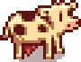
Vacas
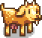
Cabras
Ovelhas
Porcos
Os animais vão te fornecer diversos recursos que você pode vender, usar para fazer receitas, roupas e diversos outros utensílios
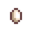
Ovos: Você obtém com as galinhas
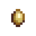
Ovos de pata: consegue criando patos
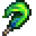
Penas de pato: consegue com patos e é ótimo para dar de presente e criar roupas.
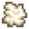
Lã: consegue com as ovelhas
Pé de coelho: Excelente para dar de presente de aniversário para os aldeões, que acreditam ser um amuleto da sorte.
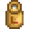
Leite: consegue com as vacas
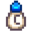
Leite de cabra: consegue com as cabras
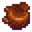
Trufas: os porcos conseguem fuçando o solo, muito lucrativo
É muito importante dar carinho e comida aos animais todos os dias, isso porque eles ficam felizes e isso aumenta a qualidade dos recursos fornecidos, impactando diretamente no lucro. Outra dica importante para manter os animais sempre felizes é comprar um aquecedor para o inverno e manter nos ambientes deles
Exploração das minas em Stardew Valley
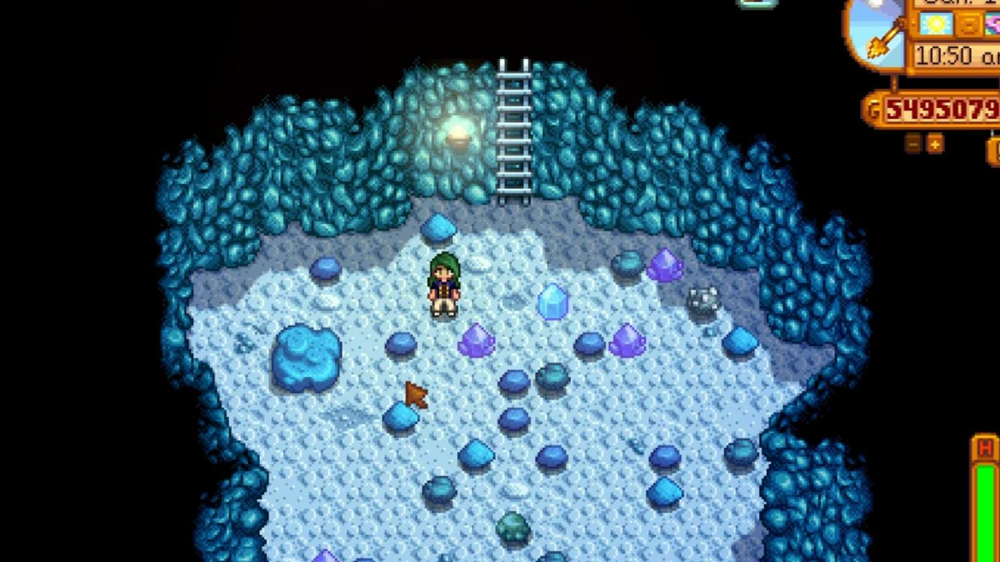
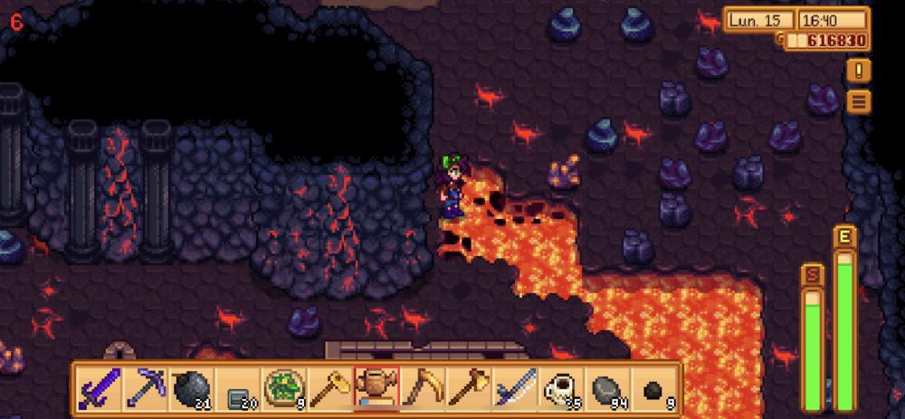
As minas são uma parte essencial do jogo, pois aqui você vai adquirir experiência matando montros, além de adquirir recursos essenciais para o jogo
Dicas importantes:
No início do jogo seu level e energia estarão baixos, além de que suas ferramentas não serão as melhores, o que pode acabar te trazendo infortúnios como ser derrotado facilmente nas cavernas, então tenha cuidado.
Leve frutas, peixe e comida cozida quando tiver, para recuperar energia.
Guia dos andares
Andares 1-39: Abundante em cobre
Andares 40-79: Abundante em ferro
Andares 80+: Abundante em ouro
Outros minérios como írio você só vai encontrar na caverna do deserto, que possui uma dificuldade mais elevada.
 Carpa
Carpa Sardinha
Sardinha Brema
Brema Bagre (quando chove)
Bagre (quando chove)
 Lixo😅
Lixo😅

 Galinhas
Galinhas Patos
Patos Coelhos
Coelhos Ovelhas
Ovelhas Porcos
Porcos Pé de coelho: Excelente para dar de presente de aniversário para os aldeões, que acreditam ser um amuleto da sorte.
Pé de coelho: Excelente para dar de presente de aniversário para os aldeões, que acreditam ser um amuleto da sorte.